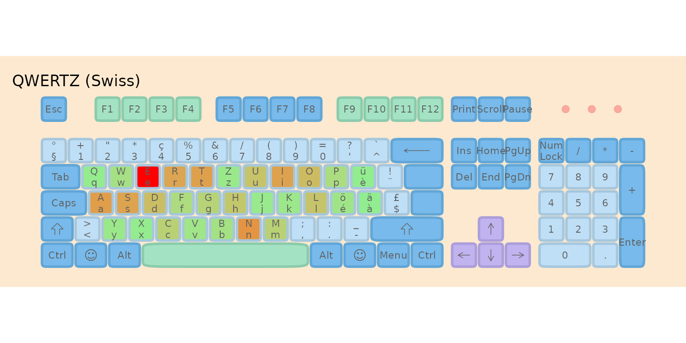
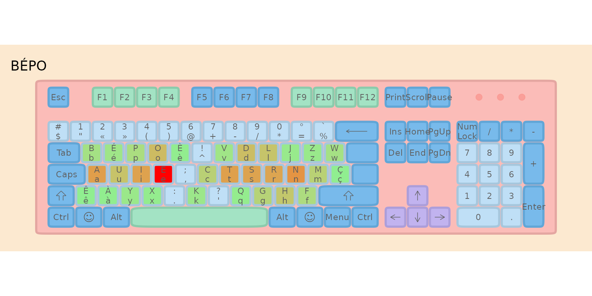
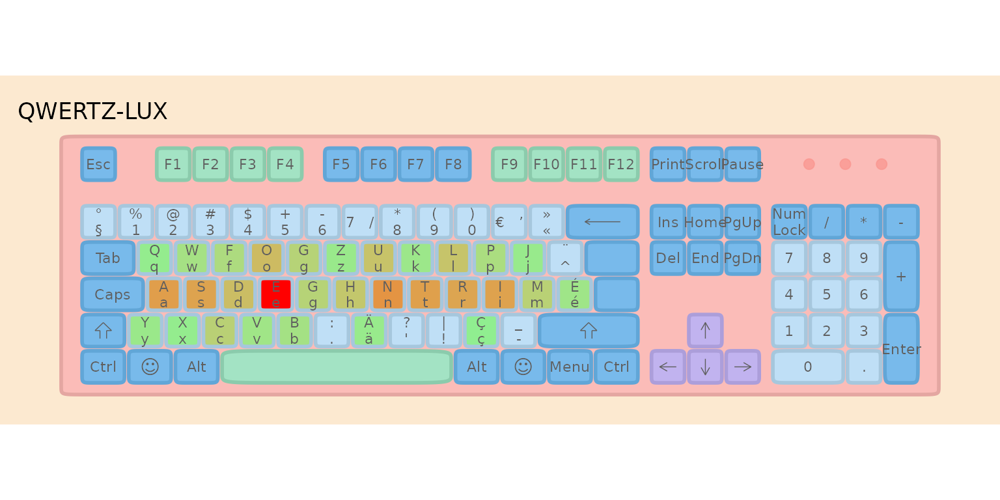

Introducing QWERTZ-LUX: A Better Keyboard Layout for Luxembourg
Bruno Rodrigues
introduction.RmdTL;DR
I’ve been thinking about keyboard layouts for a while. QWERTZ isn’t great, and France recently adopted BÉPO as an official standard alongside a revised AZERTY. What would such an optimized layout look like for Luxembourg? Here’s my proposal: QWERTZ-LUX.
⚠️ This is a work in progress! The layout, the name, and even the methodology are all open for discussion. I’m sharing this early because I’d love to hear from the community—especially those who type in multiple languages daily. Your feedback will shape the final version.
The Problem with QWERTZ
If you’ve ever wondered why you’re typing “E” with your middle finger stretched up to the top row while “J” (which you barely use) sits comfortably on the home row… well, you’re not alone. The QWERTZ layout, like its QWERTY cousin, was designed in the 1870s for typewriters. The primary concern wasn’t typing efficiency—it was preventing mechanical jamming of type bars.
Fast forward 150 years: we’re still using essentially the same layout, even though the mechanical constraints disappeared decades ago.
The home row—where your fingers naturally rest—should contain the most frequently used letters. But look at QWERTZ’s home row:
A S D F G H J K LFor a multilingual environment like Luxembourg (where we type in French, German, Luxembourgish, and English), this means:
- E (the most frequent letter in all four languages) is on the top row
- T, N, R, I (all extremely common) are scattered or require reaching
- J, K (rarely used) take prime real estate on the home row
This is objectively inefficient.
France Shows the Way
In 2019, France officially adopted two new keyboard standards:
- A revised AZERTY that fixes many issues while maintaining familiarity
- BÉPO — a completely redesigned layout optimized for French
I’ve been using BÉPO for years, and I can honestly say it’s a game-changer. Typing feels more natural, there’s less finger movement, and the learning curve, while steep at first, pays off significantly.
But here’s the thing: BÉPO was designed primarily for French. Luxembourg is unique— we need something that works for French and German and Luxembourgish and English.
The QWERTZ-LUX Approach
So I started wondering: what would an optimized keyboard layout for Luxembourg look like?
I had two options:
- Go full BÉPO and adapt it for Luxembourgish needs
- Keep QWERTZ as a base and optimize only what’s necessary
I chose a middle path, inspired by Carpalx’s partial optimization philosophy. Martin Krzywinski demonstrated that you don’t need to remap the entire keyboard to reap most of the rewards—just 5 strategic key swaps can achieve 70% of the effort reduction of a fully optimized layout, while the learning curve remains manageable.
QWERTZ-LUX follows this principle. It’s essentially a fork of BÉPO’s structure, but with modifications that:
- Keep familiar elements for QWERTZ users (Ctrl+Z, Ctrl+X, Ctrl+C, Ctrl+V shortcuts)
- Optimize the letter arrangement for our multilingual corpus
- Provide direct access to accented characters (é, à, ü, ö, ç, ä) without dead keys
The home row had to change substantially—QWERTZ’s home row is simply too inefficient. But I tried to minimize disruption elsewhere, following the partial optimization insight that the first few key swaps matter most.
The Corpus: What Does Luxembourg Type?
To evaluate keyboard layouts fairly, we need text that reflects what people actually type in Luxembourg. I created a balanced multilingual corpus with:
- 30% French — Administrative and business language
-
30% English — International communication
- 20% German — Media and education
- 20% Luxembourgish — Daily life and national identity
This weighting roughly matches language usage patterns in Luxembourg workplaces and daily communication. The top letters across all languages? E, N, S, T, R, I, A — exactly what you’d want on your home row.
The Effort Model Explained
Before comparing layouts, let’s understand how we measure “typing effort.” The lbkeyboard package uses a model inspired by Carpalx, the seminal keyboard layout optimization tool created by Martin Krzywinski.
Carpalx vs lbkeyboard
| Aspect | Carpalx | lbkeyboard |
|---|---|---|
| Unit of analysis | Triads (3-key sequences) | Bigrams + individual keys |
| Base effort | Finger travel distance | Position-based (row + column) |
| Penalties | Hand, row, finger costs | Same-finger, same-hand, row-change |
| Stroke path | Complex path penalties | Simplified via bigram weights |
| Layer support | Not built-in | Shift, AltGr, dead key penalties |
Carpalx uses triads and a sophisticated stroke path model. We simplify this to bigrams (2-key sequences) for faster computation while retaining the key ergonomic insights.
1. Base Effort (Weight: 3.0)
Every key has an inherent effort based on position. Home row keys (where fingers rest) have the lowest effort; reaching up to the top row or down to the bottom row costs more. Finger strength matters too—index fingers are stronger than pinkies.
Example: Typing “e” on QWERTZ (top row, middle finger reach) costs more than typing “j” (home row, index finger)—even though we use “e” 100× more often!
2. Same-Finger Bigram Penalty (Weight: 3.0)
Using the same finger twice in a row is slow and uncomfortable. The model heavily penalizes these sequences.
Example: Typing “de” on QWERTZ uses the same finger (middle finger, D→E). This is penalized. On BÉPO, these letters are on different hands, so no penalty.
3. Same-Hand Penalty (Weight: 0.5)
Consecutive keys on the same hand are slightly harder than alternating hands, because one hand must do all the work.
4. Row Change Penalty (Weight: 0.5)
Jumping between rows (e.g., top→bottom) requires more finger travel than staying on the same row.
5. Layer Penalties
Characters requiring modifier keys (Shift, AltGr, dead keys) incur
extra effort: - Shift: +5% effort -
AltGr: +20% effort
- Dead key (e.g., ˆ + o = ô): +40% effort (two
keystrokes!)
Putting It Together
The total effort formula is:
Total = Σ (base × frequency) + Σ (same_finger_penalty) + Σ (same_hand_penalty)
+ Σ (row_change_penalty) + Σ (layer_penalties)Numerical Example: Consider typing “the” (one of the most common English trigrams):
| Layout | Key Positions | Same-Finger? | Row Changes | Effort |
|---|---|---|---|---|
| QWERTZ | T(top), H(home), E(top) | No | 2 | Moderate |
| BÉPO | T(home), H(home), E(home) | No | 0 | Low |
BÉPO places all three letters on the home row, eliminating row changes entirely.
A Concrete Example: The Pangram
Let’s calculate actual effort scores for “the quick brown fox jumps over the lazy dog” (a pangram using every letter of the alphabet):
# Load layouts
data("ch_qwertz")
data("afnor_bepo")
qwertz_lux <- create_qwertz_lux_keyboard()
# Effort weights (same as used throughout)
effort_weights <- list(
base = 3.0,
same_finger = 3.0,
same_hand = 0.5,
row_change = 0.5,
trigram = 0.3
)
pangram <- "the quick brown fox jumps over the lazy dog"
# Calculate effort for each layout
pangram_qwertz <- calculate_layout_effort(ch_qwertz, pangram,
keys_to_evaluate = letters,
effort_weights = effort_weights)
pangram_bepo <- calculate_layout_effort(afnor_bepo, pangram,
keys_to_evaluate = letters,
effort_weights = effort_weights)
pangram_lux <- calculate_layout_effort(qwertz_lux$base, pangram,
keys_to_evaluate = letters,
effort_weights = effort_weights)
data.frame(
Layout = c("QWERTZ", "BÉPO", "QWERTZ-LUX"),
Effort = round(c(pangram_qwertz, pangram_bepo, pangram_lux), 2),
`vs QWERTZ` = paste0(round((1 - c(pangram_qwertz, pangram_bepo, pangram_lux) /
pangram_qwertz) * 100, 1), "%"),
check.names = FALSE
)
#> Layout Effort vs QWERTZ
#> 1 QWERTZ 338.69 0%
#> 2 BÉPO 268.79 20.6%
#> 3 QWERTZ-LUX 303.08 10.5%Even for this short 35-letter sentence, the optimized layouts require measurably less effort.
How Much Better Is It?
Using this effort model (with the weights shown above), here’s how the layouts compare:
#> Layout Effort Score Hand Balance (L/R %) Relative (%)
#> 1 BÉPO 633624.9 43.6/56.4 100.0
#> 2 QWERTZ-LUX 642547.9 52.1/47.9 101.4
#> 3 QWERTZ (Swiss) 1094468.2 59/41 172.7
#> Improvement vs QWERTZ
#> 1 42.1%
#> 2 41.3%
#> 3 0%Visualizing the Difference: Heatmaps
Heatmaps show where your fingers spend time. Brighter colors = more keystrokes. Ideally, you want the brightness concentrated on the home row.


Notice how BÉPO and QWERTZ-LUX concentrate activity on the home row, while QWERTZ spreads effort across all rows.
The QWERTZ-LUX Layout
Here’s what the optimized layout looks like:

Key Features
| Feature | Benefit |
|---|---|
| Optimized home row | High-frequency letters (E, T, N, R, I, S) within easy reach |
| Direct accents | é, à, ü, ö, ç, ä accessible without dead key combinations |
| ZXCV preserved | Common shortcuts (Ctrl+Z/X/C/V) stay in familiar positions |
| BÉPO-compatible | Same modifier layer philosophy as BÉPO |
Should You Switch?
That depends on your priorities:
If you value efficiency: Yes. The numbers don’t lie—QWERTZ-LUX requires meaningfully less effort for the same typing tasks.
If you’re a touch typist: You’ll need to relearn the layout, but the investment pays off. I’d estimate 2-4 weeks of practice to regain full speed.
If you type casually: The switch might not be worth the learning curve. But if you’re reading this, you’re probably not a casual typist!
What’s Next?
I’m still refining this layout based on real-world usage. The lbkeyboard package lets you:
- Analyze your own text corpora
- Experiment with different layout modifications
- Quantify improvements with the effort model
Want to try it? Install the package and dive in:
# Install from GitHub
# remotes::install_github("b-rodrigues/lbkeyboard")
library(lbkeyboard)
# Explore the layout
qwertz_lux <- parse_layout_ini("layouts/qwertz-lux/layout.ini")
print(qwertz_lux)
# Visualize it
plot_layout_ini("layouts/qwertz-lux/layout.ini")Discussion
I’d love to hear your thoughts:
- What letters/symbols do you type most often? (This helps tune the model)
- What shortcuts can’t you live without? (I tried to preserve common ones)
- Would you try an optimized layout? (Or are you QWERTZ-for-life?)
The beauty of having this as an R package is that you can fork it and create your own optimized layout for your specific needs. The code is open source, the methodology is transparent, and the effort model is documented.
Happy typing! 🎹
About the Name
The current working name “QWERTZ-LUX” is descriptive but not final. The first letters of the layout are QWFOG, which doesn’t exactly roll off the tongue like “QWERTY” or “BÉPO.” Here are some alternatives I’m considering:
| Name | Meaning |
|---|---|
| QWERTZ-LUX | Current name; descriptive (QWERTZ variant for Luxembourg) |
| LÉTZ | Short for Lëtzebuergesch (Luxembourgish); catchy and culturally meaningful |
| AUIE | From the home row left hand (A, U, I, E); pronounceable as “ow-ee” |
| LUXO | Luxembourg Optimized |
| TRIGLOT | Reflects the trilingual focus (French, German, Luxembourgish) |
What do you think? I’m genuinely open to suggestions—a good name helps adoption!
Session Info
sessionInfo()
#> R version 4.5.2 (2025-10-31)
#> Platform: x86_64-pc-linux-gnu
#> Running under: Ubuntu 24.04.3 LTS
#>
#> Matrix products: default
#> BLAS/LAPACK: /nix/store/k8aawsx66xjgd8qhdr24dqaq9s0w8av5-blas-3/lib/libblas.so.3; LAPACK version 3.12.0
#>
#> locale:
#> [1] LC_CTYPE=en_US.UTF-8 LC_NUMERIC=C
#> [3] LC_TIME=en_US.UTF-8 LC_COLLATE=en_US.UTF-8
#> [5] LC_MONETARY=en_US.UTF-8 LC_MESSAGES=en_US.UTF-8
#> [7] LC_PAPER=en_US.UTF-8 LC_NAME=C
#> [9] LC_ADDRESS=C LC_TELEPHONE=C
#> [11] LC_MEASUREMENT=en_US.UTF-8 LC_IDENTIFICATION=C
#>
#> time zone: Etc/UTC
#> tzcode source: system (glibc)
#>
#> attached base packages:
#> [1] stats graphics grDevices utils datasets methods base
#>
#> other attached packages:
#> [1] ggplot2_4.0.1 dplyr_1.1.4 lbkeyboard_0.1.0 testthat_3.3.1
#>
#> loaded via a namespace (and not attached):
#> [1] gtable_0.3.6 xfun_0.55 bslib_0.9.0 htmlwidgets_1.6.4
#> [5] devtools_2.4.6 remotes_2.5.0 processx_3.8.6 callr_3.7.6
#> [9] vctrs_0.6.5 tools_4.5.2 ps_1.9.1 generics_0.1.4
#> [13] tibble_3.3.0 pkgconfig_2.0.3 RColorBrewer_1.1-3 S7_0.2.1
#> [17] desc_1.4.3 lifecycle_1.0.4 compiler_4.5.2 farver_2.1.2
#> [21] stringr_1.6.0 textshaping_1.0.4 brio_1.1.5 ggforce_0.5.0
#> [25] codetools_0.2-20 htmltools_0.5.9 usethis_3.2.1 sass_0.4.10
#> [29] yaml_2.3.12 pillar_1.11.1 pkgdown_2.2.0 crayon_1.5.3
#> [33] jquerylib_0.1.4 MASS_7.3-65 ellipsis_0.3.2 cachem_1.1.0
#> [37] sessioninfo_1.2.3 iterators_1.0.14 foreach_1.5.2 tidyselect_1.2.1
#> [41] digest_0.6.39 stringi_1.8.7 purrr_1.2.0 labeling_0.4.3
#> [45] polyclip_1.10-7 rprojroot_2.1.1 fastmap_1.2.0 grid_4.5.2
#> [49] cli_3.6.5 magrittr_2.0.4 pkgbuild_1.4.8 withr_3.0.2
#> [53] scales_1.4.0 rmarkdown_2.30 otel_0.2.0 ragg_1.5.0
#> [57] memoise_2.0.1 evaluate_1.0.5 GA_3.2.4 knitr_1.51
#> [61] rlang_1.1.6 Rcpp_1.1.0 glue_1.8.0 tweenr_2.0.3
#> [65] pkgload_1.4.1 rstudioapi_0.17.1 jsonlite_2.0.0 R6_2.6.1
#> [69] systemfonts_1.3.1 fs_1.6.6 prismatic_1.1.2